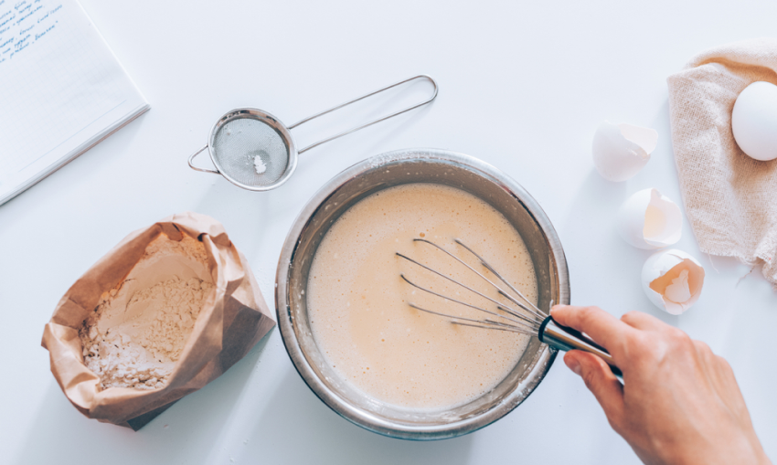

- July - 0
- June - 3
- May - 3
- April - 4
- March - 2
- February - 1
- January - 2
- 2019
- 2018
Nonso Williams

blog


Pecan Pie Recipe
So I woke up this morning and had the most marvelous idea for my already awesome pecan pie recipe. Yes we're adding a new ingredient but it's something that you can...
5 Mins | 20.3k Likes | Read

My Journey So Far
A lot of folks see me and go oh wow you're the Fondat King and want to get a picture thanks to the show on Food Net but they don't know the full story of waht it took to get here...
5 Mins | 20.3k Likes | Read

Italian Short Bread
Italian Short Bread is a more of less a default when it comes to meals in the streets of Milan and the canals of Venice. Mainly eaten with soup or sauce of ddifferent kinds, here's a recipe
5 Mins | 20.3k Likes | Read

Lemon Crustard Custard
So I woke up this morning and had the most marvelous idea for my already awesome pecan pie recipe. Yes we're adding a new ingredient but it's something that you can...
5 Mins | 20.3k Likes | Read
Recent Posts
Tags
Recipe
Lifestyle
Travels
Gigs
1
2
3